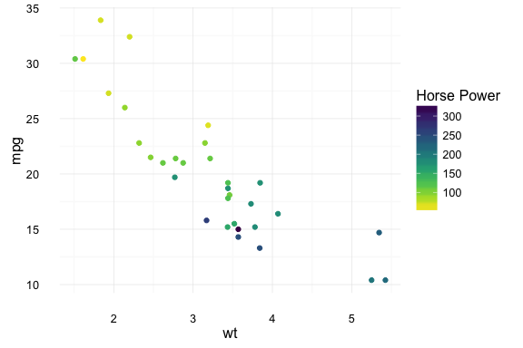
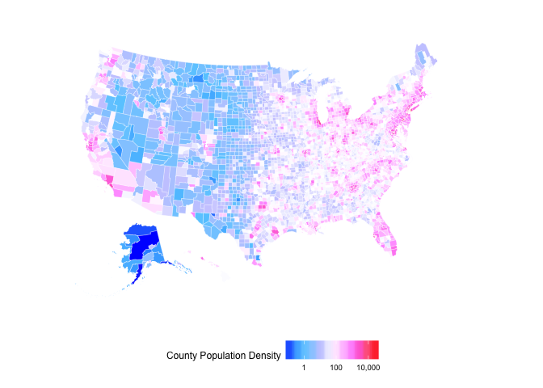

Color Palettes from Node.js Colormap module.
This is an R package that allows you to generate colors from color palettes defined in Node.js's colormap module. In total it provides 44 distinct palettes made from sequential and/or diverging colors. In addition to the pre defined palettes you can also specify your own set of colors.
There are also scale functions that can be used with ggplot2.
Credits
- The colormap Node.js module which does all the heavylifting.
- The V8 package which allows R code to call Javascript code.
- Bob Rudis's zoneparser package which I used as a skeleton for this pacakge.
- Simon Garnier's viridis package for ggplot2 scale functions.
Updates

- 2016-09-06 Ability to generate a custom palette.
- 2016-08-30 Input Validation and ggplot2 scales.
- 2016-08-29 First Release.
Installation
Requires V8
if(!require("V8")) install.packages("V8")
if(!require("devtools")) install.packages("devtools")
devtools::install_github("bhaskarvk/colormap")
Usage
The main function is colormap which takes 5 optional arguments
- colormap: A string representing one of the 44 built-in colormaps.You can use the
colormapslist to specify a value. e.g.colormaps$densityOR A vector of colors in hex e.g. c('#000000','#777777','#FFFFFF') OR A list of list e.g. list(list(index=0,rgb=c(255,255,255)),list(index=1,rgb=c(255,0,0))) - nshades: Number of colors to generate.
- format: one of 'hex', 'rgb', 'rgbaString'
- alpha: Between 0 & 1 to specify the transparency.
- reverse: Boolean. Whether to reverse the order of the colors returned or not.
Example
library(colormap)
# Defaults to 72 colors from the 'jet' palette.
scales::show_col(colormap(), labels = F)

# Specify a different palette from a list of pre-defined palette.
scales::show_col(colormap(colormap=colormaps$temperature, nshades=20))

# Specify opacity value.
scales::show_col(colormap(colormap=colormaps$temperature, nshades=20, alpha=0.7))

# Specify colormap as vector of colors.
scales::show_col(colormap(colormap=c('#FFFFFF','#FF0000'),nshades = 12))

# Specify colormap as list of lists.
scales::show_col(colormap(colormap=list(list(index=0,rgb=c(0,255,0)),
list(index=1,rgb=c(255,0,255))),
nshades=12, alpha=0.65))

You can also get the colors in a 'rgb' matrix and a rgba string vector format
colormap(format='rgb',nshades=5) # As rgb
#> [,1] [,2] [,3] [,4]
#> [1,] 0 0 131 1
#> [2,] 2 156 212 1
#> [3,] 128 255 130 1
#> [4,] 253 130 0 1
#> [5,] 128 0 0 1
colormap(format='rgbaString',nshades=10) # As rgba string
#> [1] "rgba(0,0,131,1)" "rgba(0,54,166,1)" "rgba(2,134,202,1)"
#> [4] "rgba(4,224,242,1)" "rgba(72,255,186,1)" "rgba(188,255,69,1)"
#> [7] "rgba(254,215,0,1)" "rgba(252,97,0,1)" "rgba(238,0,0,1)"
#> [10] "rgba(128,0,0,1)"
You also get scale_fill_colormap and scale_color_colormap functions for using these palettes in ggplot2 plots. Check ?colormap::scale_fill_colormap for details.
library(ggplot2)
# Continuous color scale
ggplot(mtcars,aes(x=wt,y=mpg)) + geom_point(aes(color=hp)) +
theme_minimal() +
scale_color_colormap('Horse Power',
discrete = F,colormap = colormaps$viridis, reverse = T)

ggplot(mtcars,aes(x=wt,y=mpg)) + geom_point(aes(color=as.factor(cyl))) +
theme_minimal() +
scale_color_colormap('Cylinder',
discrete = T,colormap = colormaps$warm, reverse = T)
Here are two choroplethes using scale_fill_colormap.
library(maptools)
#> Loading required package: sp
#> Checking rgeos availability: TRUE
library(scales)
library(ggplot2)
library(ggalt)
#> ggalt is under *active* development. See https://github.com/hrbrmstr/ggalt for changes
library(albersusa)
library(ggthemes)
library(colormap)
us <- usa_composite()
us_map <- fortify(us, region="name")
gg_usa <- ggplot()
gg_usa <- gg_usa + geom_map(data=us_map, map=us_map,
aes(x=long, y=lat, map_id=id),
color="#2b2b2b", size=0.1, fill=NA)
gg_usa <- gg_usa + theme_map()
gg_usa <- gg_usa +
geom_map(data=us@data, map=us_map,
aes(fill=pop_2014, map_id=name),
color="white", size=0.1) +
coord_proj(us_laea_proj) +
theme(legend.position="right")
gg_usa +
scale_fill_colormap("State Population\n(2014 Estimates)", labels=comma,
colormap = colormaps$copper, reverse = T, discrete = F)
counties <- counties_composite()
counties_map <- fortify(counties, region="fips")
gg_counties <- ggplot()
gg_counties <- gg_counties + geom_map(data=counties_map, map=counties_map,
aes(x=long, y=lat, map_id=id),
color="#2b2b2b", size=0.1, fill=NA)
gg_counties <- gg_counties + theme_map() +
coord_proj(us_laea_proj, xlim = c(-122, -74.5 ))
gg_counties <- gg_counties +
geom_map(data=counties@data, map=counties_map,
aes(fill=population/census_area, map_id=fips),
color="white", size=0.1)
gg_counties +
scale_fill_colormap("County Population Density", labels=comma, trans = 'log10',
colormap = colormaps$picnic, reverse = F, discrete = F) +
theme(#panel.border = element_rect(colour = "black", fill=NA, size=1),
legend.position = 'bottom', legend.direction = "horizontal")

Here is a plot showing all 44 pre-defined color palettes and the colors they generate.
par(mfrow=c(44,1))
par(mar=rep(0.25,4))
purrr::walk(colormaps, function(x) {
barplot(rep(1,72), yaxt="n", space=c(0,0),border=NA,
col=colormap(colormap=x), main = sprintf("\n\n%s",x))
})